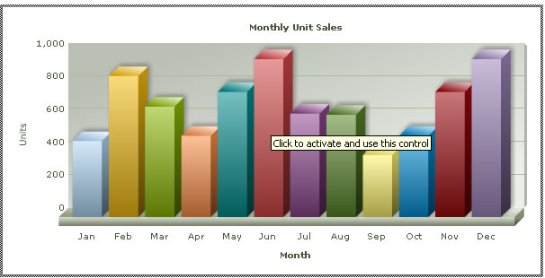

FusionCharts XT can effectively be used with ColdFusion to plot dynamic data-driven charts.
Even when used with ColdFusion, FusionCharts XT internally uses JavaScript and XML/JSON to render the charts. The ColdFusion code actually helps you output this JavaScript and XML/JSON. To aid your understanding of this section, we will recommend you to go through the following sections of documentation (if you've not already read them):
- Creating your first chart
- Changing chart type and size
- Configuring chart background, canvas, fonts, captions, data plot, labels, values, axis, legend, padding and margins, and number formatting
- Using XML or JSON as data source
- Using JavaScript API of FusionCharts
- Creating drill-down charts and LinkedCharts
- Exporting charts as images or CSV
- How FusionCharts XT work?
In this example, we will show a few basic examples to help you get started.
We will cover the following examples here:
- Using FusionCharts XT in ColdFusion with a pre-built Data.xml (which contains data to plot)
- Changing the above chart into a single page chart using Data String method.
- Using FusionCharts JavaScript class to embed the chart.
Let's quickly see each of them.
Before you proceed with the contents in this page, we strictly recommend you to please go through the How FusionCharts XT works? section.
Let's build our first example. In this example, we will create a "Monthly Unit Sales" chart using Data URL method. For a start, we will manually code our XML data in a physical XML document Data.xml and then utilize it in our chart contained in a
ColdFusion Page (BasicChart.cfm).
Let's first have a look at the XML Data document:
<chart caption='Monthly Unit Sales' xAxisName='Month' yAxisName='Units' showValues='0' formatNumberScale='0' showBorder='1'>
<set label='Jan' value='462' />
<set label='Feb' value='857' />
<set label='Mar' value='671' />
<set label='Apr' value='494' />
<set label='May' value='761' />
<set label='Jun' value='960' />
<set label='Jul' value='629' />
<set label='Aug' value='622' />
<set label='Sep' value='376' />
<set label='Oct' value='494' />
<set label='Nov' value='761' />
<set label='Dec' value='960' />
</chart>This XML is stored as Data.xml in Data Folder under BasicExample folder. It basically contains the data to create a single series chart to show "Monthly Unit Sales". We will plot this on a Column 3D Chart. Let's see how to do that.
To plot a Chart that consumes this data, you need to include the HTML code to embed a Flash object and then provide the requisite parameters. To make things simpler for you, we have put all this functionality in a CFM function named as renderChartHTML(). This function is contained in Download Package > Code > CFM > Includes > FusionCharts.cfm file. So, whenever you need to work with FusionCharts XT in CFM, just include this file in your page and then you can work with FusionCharts XT very easily.
Let's see it in example. BasicChart.cfm contains the following code to render the chart:
<HTML>
<HEAD>
<TITLE>
FusionCharts XT - Simple Column 3D Chart
</TITLE>
</HEAD>
<cfinclude template="../Includes/FusionCharts.cfm">
<BODY>
<CENTER>
<h2>FusionCharts Examples</h2>
<h4>Basic example using pre-built Data.xml</h4>
<cfoutput>#renderChartHTML("../../FusionCharts/Column3D.swf", "Data/Data.xml", "", "myFirst", 600, 300, false)#</cfoutput>
</CENTER>
</BODY>
</HTML>As you can see above, we have first included FusionCharts.cfm to help us easily create charts. After that, we have simply invoked the renderChartHTML function to render the chart. To this function, you can pass the following parameters (in same order):
| Parameter | Description |
| chartSWF | SWF File Name (and Path) of the chart which you intend to plot. Here, we are plotting a Column 3D chart. So, we have specified it as ../../FusionCharts/Column3D.swf |
| strURL | If you intend to use the Data URL method for the chart, pass the URL as this parameter. Else, set it to "" (in case of the Data String method). In this case, we are using the Data.xml file, so we specify Data/Data.xml |
| strXML | If you intend to use the Data String method for this chart, pass the XML data as this parameter. Else, set it to "" (in case of the Data URL method). Since we are using the Data URL method, we specify this parameter as "". |
| chartId | ID for the chart, using which it will be recognized in the HTML page. Each chart on the page needs to have a unique ID.
To provide cross-browser compatibility, we recommend you not to start the ID with a numerical value, nor use space as part of the ID. |
| chartWidth | Intended width for the chart (in pixels) |
| chartHeight | Intended height for the chart (in pixels) |
| debugMode | Whether to start the chart in debug mode. Please see the Debugging your Charts section for more details on Debug Mode. |
When you now run this page, you will see a chart like the one below.
If you do not see a chart like the one below, please follow the steps listed in Debugging your Charts > Basic Troubleshooting section of this documentation.

So, you just saw how simple it is to create a chart using ColdFusion and FusionCharts XT. Let's now convert the above chart to use Data String method.
<HTML>
<HEAD>
<TITLE>
FusionCharts XT - Simple Column 3D Chart using Data String method
</TITLE>
</HEAD>
<cfinclude template="../Includes/FusionCharts.cfm">
<BODY>
<cfset strXML = "">
<cfset strXML = strXML & "<chart caption='Monthly Unit Sales' xAxisName='Month' yAxisName='Units' showValues='0' formatNumberScale='0' showBorder='1'>">
<cfset strXML = strXML & "<set label='Jan' value='462' />">
<cfset strXML = strXML & "<set label='Feb' value='857' />">
<cfset strXML = strXML & "<set label='Mar' value='671' />">
<cfset strXML = strXML & "<set label='Apr' value='494' />">
<cfset strXML = strXML & "<set label='May' value='761' />">
<cfset strXML = strXML & "<set label='Jun' value='960' />">
<cfset strXML = strXML & "<set label='Jul' value='629' />">
<cfset strXML = strXML & "<set label='Aug' value='622' />">
<cfset strXML = strXML & "<set label='Sep' value='376' />">
<cfset strXML = strXML & "<set label='Oct' value='494' />">
<cfset strXML = strXML & "<set label='Nov' value='761' />">
<cfset strXML = strXML & "<set label='Dec' value='960' />">
<cfset strXML = strXML & "</chart>">
<!--- Create the chart - Column 3D Chart with data from strXML variable using Data String method --->
<cfoutput>#renderChartHTML("../../FusionCharts/Column3D.swf", "", strXML, "myNext", 600, 300, false)#</cfoutput>
</BODY>
</HTML>
As you can see above, we have:
- Included FusionCharts.cfm file to render charts easily
- Created the XML data document in a CFM variable strXML using string concatenation. Here, we are hard-coding the data. In your applications, you can build this data dynamically after interacting with databases or external sources of data.
- Finally, created the chart and set the dataXML parameter as strXML. We leave dataURL parameter blank.
When you see this chart, you will get the same results as before.
If you see the charts from previous examples in the latest versions of Internet Explorer, you will see a screen as below:

Internet Explorer asks you to "Click and activate..." to use the chart. This is happening because of a technical issue in Internet Explorer on part of Microsoft Corporation. As such, all Flash movies need to be clicked once before you can start interacting with them.
However, the good news is that there is a solution to it. This happens only when you directly embed the HTML code of the chart. It will not happen when you use JavaScript to embed the chart. To see how to embed using JavaScript at code level, please see Creating Your First Chart > JavaScript Embedding Section.
Again, to make things simpler for you, we have provided a CFM function called renderChart()which helps you wrap this JavaScript function in CFM function, so that you do not have to get your hands dirty with JavaScript, Flash and HTML. This function is contained in the previously used FusionCharts.cfm file.
Let's now quickly put up a sample to show the use of this function. We create another CFM page SimpleChart.cfm to use this function to plot a chart from data contained in our previously created Data.xml file. It contains the following code:
<HTML>
<HEAD>
<TITLE>
FusionCharts XT - Simple Column 3D Chart
</TITLE>
<SCRIPT LANGUAGE="Javascript" SRC="../../FusionCharts/FusionCharts.js"></SCRIPT>
</HEAD>
<cfinclude template="../Includes/FusionCharts.cfm">
<BODY>
<!--- Create the chart - Column 3D Chart with data from Data/Data.xml --->
<cfoutput>#renderChart("../../FusionCharts/Column3D.swf", "Data/Data.xml", "", "myFirst", 600, 300, false, false)#</cfoutput>
</BODY>
</HTML>As you can see above, we have:
- Included the FusionCharts.js file, which is required when using the JavaScript method.
- Included the FusionCharts.cfm file.
- Created the chart using the renderChart() method.
The renderChart() method takes in the following parameters:
| Parameter | Description |
| chartSWF | SWF File Name (and Path) of the chart which you intend to plot. Here, we are plotting a Column 3D chart. So, we have specified it as ../../FusionCharts/Column3D.swf |
| strURL | If you intend to use the Data URL method for the chart, pass the URL as this parameter. Else, set it to "" (in case of Data String method). In this case, we are using the Data.xml file, so we specify Data/Data.xml |
| strXML | If you intend to use the Data String method for this chart, pass the XML data as this parameter. Else, set it to "" (in case of Data URL method). Since we are using the Data URL method, we specify this parameter as "". |
| chartId | ID for the chart, using which it will be recognized in the HTML page. Each chart on the page needs to have a unique ID.
To provide cross-browser compatibility, we recommend you not to start the ID with a numerical value, nor use space as part of the ID. |
| chartWidth | Intended width for the chart (in pixels) |
| chartHeight | Intended height for the chart (in pixels) |
| debugMode | Whether to start the chart in debug mode. Please see Debugging your charts Section for more details on Debug Mode. |
| registerWithJS | Whether to register the chart with JavaScript. Please see FusionCharts XT and JavaScript section for more details on this. |
When you now view the chart, you will see that no activation is required even in Internet Explorer.